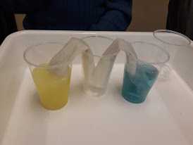

Projekt
Teema
Vesi-imeline maailm
Projektis osalesid 4-6klass. Projektis käigus õpivad nad tundma
paremini vee maailma. Esimesel päeval tegid nad erinevaid katseid.
Nad tegid katse kus oli kaks klaasi, milles sees oli värviline
vesi. Ühes oli kollane ja teises sinine. Sinna sisse pandi
salvrätik, nende ristumis koha juurde pandi sammudi klaas ja sinna
hakkas vesi tilkuma läb paber. Nadugese aja pärast oli keskmises
klaasis roheline vesi. Teised kaks klaasi olid tühjaks jooksnud.
Teisel päeval külastasid Tallinna Veepuhastusjaama Ülemistel ja
uurisit, kuidas toimub joogivee puhastamine.

Vee katse
Mina ja minu elu läbi kunsti
Projektis osalesid 10-12.klass. Projektis peamiselt joonistadi,
seda mida soovidi. Krongreetsed teemad polnud. Taustal mängis rahustav
muuskia. Teisel päeval tegid nad sugupuud. Sealt said teada kellega
suhelta ja kellega mitte. Jätkasid joonistamisega.
Kunsti loomine